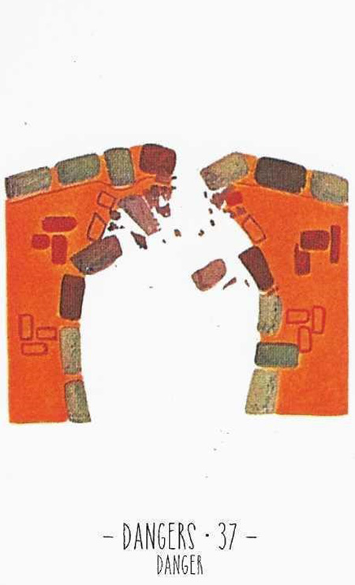

37
위험
Danger부정

그림 읽기
아치형 돌다리 가운데가 무너져 돌이 아래로 떨어지고 있습니다. 튼튼해 보이던 구조물의 갑작스러운 붕괴를 상징합니다.
위험사건사고파괴총체적 난국결별장애
핵심 내용
- 사고·결별·위험·파괴·총체적 난국
- 싸움·언쟁·이혼·장애
- 연락이 끊어진 상황, 연결고리 끊김
- 갑작스럽게 안 좋은 일이 생김
- 금전운이 최악
- 사고수, 건강상의 위험, 낙상, 뼈가 부러짐(타박상)
주요 메시지
붕괴와 위험 — 예상치 못한 사고·사건·총체적 난국
변화와 단절 — 예상치 못한 이별·싸움
실생활 적용
건강·안전 주의 — 낙상·교통사고, 직장에서는 실직·해고 가능성
위기 관리 — 상황을 정확히 평가하고 신속히 대처할 준비
학습 노트
함께 나온 카드에 따라 구체적 상황과 결과를 예측하는 데 도움을 줍니다.
조합 메모
37번+35번 = 화재·폭발·대형 사고
37번+28번+49번 = 이혼, 과부·홀아비 신세
37번+3번+44번 = 의지대로 단절 후 새 희망
8번+37번 = 명예 실추·경력 단절